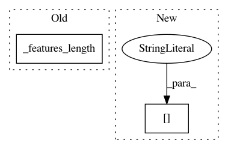

5a8b3ae5c48e299844e808e15e53b01ac0941cf1,opennmt/models/sequence_to_sequence.py,SequenceToSequence,_build,#SequenceToSequence#Any#Any#Any#Any#,79
Before Change
return dataset, self.target_embedder.padded_shapes
def _build(self, features, labels, params, mode):
batch_size = tf.shape(self._features_length(features))[0]
with tf.variable_scope("encoder"):
source_inputs = self.source_embedder.embed_from_data(
After Change
decoder_outputs, _, decoded_length = self.decoder.decode(
target_inputs,
labels["length"],
self.target_embedder.vocabulary_size,
encoder_states,
mode=mode,
In pattern: SUPERPATTERN
Frequency: 3
Non-data size: 2
Instances
Project Name: OpenNMT/OpenNMT-tf
Commit Name: 5a8b3ae5c48e299844e808e15e53b01ac0941cf1
Time: 2017-08-23
Author: guillaume.klein@systrangroup.com
File Name: opennmt/models/sequence_to_sequence.py
Class Name: SequenceToSequence
Method Name: _build
Project Name: OpenNMT/OpenNMT-tf
Commit Name: 5a8b3ae5c48e299844e808e15e53b01ac0941cf1
Time: 2017-08-23
Author: guillaume.klein@systrangroup.com
File Name: opennmt/models/sequence_tagger.py
Class Name: SequenceTagger
Method Name: _build
Project Name: OpenNMT/OpenNMT-tf
Commit Name: 5a8b3ae5c48e299844e808e15e53b01ac0941cf1
Time: 2017-08-23
Author: guillaume.klein@systrangroup.com
File Name: opennmt/models/sequence_classifier.py
Class Name: SequenceClassifier
Method Name: _build